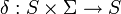
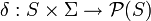
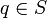
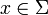
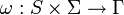
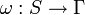

Finite-state machine
From Wikipedia, the free encyclopedia
|
|
This article may require cleanup to meet Wikipedia's quality standards. Please improve this article if you can. (March 2008) |
{kind=link}
A finite state machine (FSM) or finite state automaton (plural: automata), or simply a state machine, is a model of behavior composed of a finite number of states, transitions between those states, and actions. It is similar to a "flow graph" where we can inspect the way in which the logic runs when certain conditions are met. A finite state machine is an abstract model of a machine with a primitive internal memory.
[edit] Concepts and vocabulary
A current state is determined by past states of the system. As such, it can be said to record information about the past, i.e., it reflects the input changes from the system start to the present moment. A transition indicates a state change and is described by a condition that would need to be fulfilled to enable the transition. An action is a description of an activity that is to be performed at a given moment. There are several action types:
- Entry action
- which is performed when entering the state
- Exit action
- which is performed when exiting the state
- Input action
- which is performed depending on present state and input conditions
- Transition action
- which is performed when performing a certain transition
A FSM can be represented using a state diagram (or state transition diagram) as in figure 1 above. Besides this, several state transition table types are used. The most common representation is shown below: the combination of current state (B) and condition (Y) shows the next state (C). The complete actions information can be added only using footnotes. An FSM definition including the full actions information is possible using state tables (see also VFSM).
| Current State → Condition ↓ |
State A | State B | State C |
|---|---|---|---|
| Condition X | … | … | … |
| Condition Y | … | State C | … |
| Condition Z | … | … | … |
In addition to their use in modeling reactive systems presented here, finite state automata are significant in many different areas, including electrical engineering, linguistics, computer science, philosophy, biology, mathematics, and logic. A complete survey of their applications is outside the scope of this article. Finite state machines are a class of automata studied in automata theory and the theory of computation. In computer science, finite state machines are widely used in modeling of application behavior, design of hardware digital systems, software engineering, compilers, network protocols, and the study of computation and languages.
[edit] Classification
There are two different groups: Acceptors/Recognizers and Transducers.
[edit] Acceptors and recognizers
{kind=link}
Acceptors and recognizers (also sequence detectors) produce a binary output, saying either yes or no to answer whether the input is accepted by the machine or not. All states of the FSM are said to be either accepting or not accepting. At the time when all input is processed, if the current state is an accepting state, the input is accepted; otherwise it is rejected. As a rule the input are symbols (characters); actions are not used. The example in figure 2 shows a finite state machine which accepts the word "nice". In this FSM the only accepting state is number 7.
The machine can also be described as defining a language, which would contain every word accepted by the machine but none of the rejected ones; we say then that the language is accepted by the machine. By definition, the languages accepted by FSMs are the regular languages - that is, a language is regular if there is some FSM that accepts it.
[edit] Start state
The start state is usually shown drawn with an arrow "pointing at it from any where" (Sipser (2006) p.34).
[edit] Accept state
{kind=link}
An accept state (sometimes referred to as an accepting state) is a state at which the machine has successfully performed its procedure. It is usually represented by a double circle.
An example of an accepting state appears on the right in this diagram of a deterministic finite automaton (DFA) which determines if the binary input contains an even number of 0s.
S1 (which is also the start state) indicates the state at which an even number of 0s has been input and is therefore defined as an accepting state. This machine will give a correct end state if the binary number contains an even number of zeros including a string with no zeros. Examples of strings accepted by this DFA are epsilon (the empty string), 1, 11, 11..., 00, 010, 1010, 10110 and so on.
[edit] Transducers
Transducers generate output based on a given input and/or a state using actions. They are used for control applications and in the field of computational linguistics. Here two types are distinguished:
- Moore machine
- The FSM uses only entry actions, i.e., output depends only on the state. The advantage of the Moore model is a simplification of the behaviour. Consider an elevator door. The state machine recognizes two commands: "command_open" and "command_close" which trigger state changes. The entry action (E:) in state "Opening" starts a motor opening the door, the entry action in state "Closing" starts a motor in the other direction closing the door. States "Opened" and "Closed" don't perform any actions. They signal to the outside world (e.g., to other state machines) the situation: "door is open" or "door is closed".
{kind=link}
- Mealy machine
- The FSM uses only input actions, i.e., output depends on input and state. The use of a Mealy FSM leads often to a reduction of the number of states. The example in figure 4 shows a Mealy FSM implementing the same behaviour as in the Moore example (the behaviour depends on the implemented FSM execution model and will work, e.g., for virtual FSM but not for event driven FSM). There are two input actions (I:): "start motor to close the door if command_close arrives" and "start motor in the other direction to open the door if command_open arrives". The "opening" and "closing" intermediate states are not shown.
In practice mixed models are often used.
More details about the differences and usage of Moore and Mealy models, including an executable example, can be found in the external technical note "Moore or Mealy model?"
A further distinction is between deterministic (DFA) and non-deterministic (NDFA, GNFA) automata. In deterministic automata, for each state there is exactly one transition for each possible input. In non-deterministic automata, there can be none, one, or more than one transition from a given state for a given possible input. This distinction is relevant in practice, but not in theory, as there exists an algorithm which can transform any NDFA into an equivalent but much more complex DFA.
The FSM with only one state is called a combinatorial FSM and uses only input actions. This concept is useful in cases where a number of FSM are required to work together, and where it is convenient to consider a purely combinatorial part as a form of FSM to suit the design tools.
[edit] UML state machines
{kind=link}
The Unified Modeling Language has a very rich semantics and notation for describing state machines. UML state machines overcome the limitations of traditional finite state machines while retaining their main benefits. UML state machines introduce the new concepts of hierarchically nested states and orthogonal regions, while extending the notion of actions. UML state machines have the characteristics of both Mealy machines and Moore machines. They support actions that depend on both the state of the system and the triggering event, as in Mealy machines, as well as entry and exit actions, which are associated with states rather than transitions, as in Moore machines.
[edit] FSM logic
{kind=link}
The next state and output of an FSM is a function of the input and of the current state. The FSM logic is shown in Figure 5.
[edit] Mathematical model
In accordance to the general classification, the following formal definitions are found:
- A deterministic finite state machine or acceptor deterministic finite state machine is a quintuple (Σ,S,s0,δ,F), where:
- Σ is the input alphabet (a finite, non-empty set of symbols).
- S is a finite, non-empty set of states.
- s0 is an initial state, an element of S.
- δ is the state-transition function:  (in a nondeterministic finite state machine it would be , ie., δ would return a set of states).
- F is the set of final states, a (possibly empty) subset of S.
For both deterministic and non-deterministic FSMs, it is conventional to allow δ to be a partial function, i.e. δ(q,x) does not have to be defined for every combination of  and . If an FSM M is in a state q, the next symbol is x and δ(q,x) is not defined, then M can announce an error (i.e. reject the input).
- A finite state transducer is a sextuple (Σ,Γ,S,s0,δ,ω), where:
- Σ is the input alphabet (a finite non empty set of symbols).
- Γ is the output alphabet (a finite, non-empty set of symbols).
- S is a finite, non-empty set of states.
- s0 is the initial state, an element of S. In a Nondeterministic finite state machine, s0 is a set of initial states.
- δ is the state-transition function: .
- ω is the output function.
If the output function is a function of a state and input alphabet () that definition corresponds to the Mealy model, and can be modelled as a Mealy machine. If the output function depends only on a state () that definition corresponds to the Moore model, and can be modelled as a Moore machine. A finite-state machine with no output function at all is known as a semiautomaton or transition system.
[edit] Optimization
Optimizing a FSM means finding the machine with the minimum number of states that performs the same function. The fastest known algorithm doing this is the Hopcroft minimization algorithm.[1][2] Other techniques include using an Implication table, or the Moore reduction procedure. Additionally, acyclic FSAs can be optimized using a simple bottom up algorithm.[citation needed]
[edit] Implementation
[edit] Hardware applications
{kind=link}
In a digital circuit, an FSM may be built using a programmable logic device, a programmable logic controller, logic gates and flip flops or relays. More specifically, a hardware implementation requires a register to store state variables, a block of combinational logic which determines the state transition, and a second block of combinational logic that determines the output of an FSM. One of the classic hardware implementations is the Richards controller.
Mealy and Moore machines produce logic with asynchronous output, because there is a propagation delay between the flip-flop and output. This causes slower operating frequencies in FSM. A Mealy or Moore machine can be convertable to a FSM which output is directly from a flip-flop, which makes the FSM run at higher frequencies. This kind of FSM is sometimes called Medvedev FSM. A counter is the simplest form of this kind of FSM.
[edit] Software applications
The following concepts are commonly used to build software applications with finite state machines:
[edit] See also
- UML state machine
- Abstract state machine
- ASML
- Decision tables
- Extended finite state machine
- Finite state machine with datapath
- Petri net
- Pushdown automaton
- Quantum finite automata
- Sequential logic
- Statechart
- Transition system
- Tree automaton
- Turing machine
- Hidden Markov model
- Artificial Intelligence
- Control System
- SCXML
[edit] Further reading
[edit] General
- Wagner, F., "Modeling Software with Finite State Machines: A Practical Approach", Auerbach Publications, 2006, ISBN 0-8493-8086-3.
- Samek, M., Practical Statecharts in C/C++, CMP Books, 2002, ISBN 1-57820-110-1.
- Samek, M., Practical UML Statecharts in C/C++, 2nd Edition, Newnes, 2008, ISBN 0-75068-706-1.
- Gardner, T., Advanced State Management, 2007 (video at 360Flex 2008)
- Cassandras, C., Lafortune, S., "Introduction to Discrete Event Systems". Kluwer, 1999, ISBN 0-7923-8609-4.
- Timothy Kam, Synthesis of Finite State Machines: Functional Optimization. Kluwer Academic Publishers, Boston 1997, ISBN 0-7923-9842-4
- Tiziano Villa, Synthesis of Finite State Machines: Logic Optimization. Kluwer Academic Publishers, Boston 1997, ISBN 0-7923-9892-0
- Carroll, J., Long, D. , Theory of Finite Automata with an Introduction to Formal Languages. Prentice Hall, Englewood Cliffs, 1989.
- Kohavi, Z., Switching and Finite Automata Theory. McGraw-Hill, 1978.
- Gill, A., Introduction to the Theory of Finite-state Machines. McGraw-Hill, 1962.
- Ginsburg, S., An Introduction to Mathematical Machine Theory. Addison-Wesley, 1962.
[edit] Finite state machines (automata theory) in theoretical computer science
- Arbib, Michael A. (1969). Theories of Abstract Automata (1st ed.). Englewood Cliffs, N.J.: Prentice-Hall, Inc.. ISBN 0139133682.
- Bobrow, Leonard S.; Michael A. Arbib (1974). Discrete Mathematics: Applied Algebra for Computer and Information Science (1st ed.). Philadelphia: W. B. Saunders Company, Inc.. ISBN 0721617689.
- Booth, Taylor L. (1967). Sequential Machines and Automata Theory (1st ed.). New York: John Wiley and Sons, Inc.. Library of Congress Card Catalog Number 67-25924. Extensive, wide-ranging book meant for specialists, written for both theoretical computer scientists as well as electrical engineers. With detailed explanations of state minimization techniques, FSMs, Turing machines, Markov processes, and undecidability. Excellent treatment of Markov processes.
- Boolos, George; Richard Jeffrey (1989, 1999). Computability and Logic (3rd ed.). Cambridge, England: Cambridge University Press. ISBN 0-521-20402-X. Excellent. Has been in print in various editions and reprints since 1974 (1974, 1980, 1989, 1999).
- Brookshear, J. Glenn (1989). Theory of Computation: Formal Languages, Automata, and Complexity. Redwood City, California: Benjamin/Cummings Publish Company, Inc.. ISBN 0-8053-0143-7. Approaches Church-Turing thesis from three angles: levels of finite automata as acceptors of formal languages, primitive and partial recursive theory, and power of bare-bones programming languages to implement algorithms, all in one slim volume.
- Davis, Martin; Ron Sigal, Elaine J. Weyuker (1994). Computability, Complexity, and Languages and Logic: Fundamentals of Theoretical Computer Science (2nd ed.). San Diego: Academic Press, Harcourt, Brace & Company. ISBN 0122063821.
- Hopcroft, John; Jeffrey Ullman (1979). Introduction to Automata Theory, Languages, and Computation (1st ed.). Reading Mass: Addison-Wesley. ISBN 0-201-02988-X. An excellent book centered around the issues of machine-interpretation of "languages", NP-Completeness, etc.
- Hopcroft, John E.; Rajeev Motwani, Jeffrey D. Ullman (2001). Introduction to Automata Theory, Languages, and Computation (2nd ed.). Reading Mass: Addison-Wesley. ISBN 0201441241. Distinctly different and less intimidating than the first edition.
- Hopkin, David; Barbara Moss (1976). Automata. New York: Elsevier North-Holland. ISBN 0-444-00249-9.
- Kozen, Dexter C. (1997). Automata and Computability (1st ed.). New York: Springer-Verlag. ISBN 0-387-94907-0.
- Lewis, Harry R.; Christos H. Papadimitriou (1998). Elements of the Theory of Computation (2nd ed.). Upper Saddle River, New Jersey: Prentice-Hall. ISBN 0-13-262478-8.
- Linz, Peter (2006). Formal Languages and Automata (4th ed.). Sudbury, MA: Jones and Bartlett. ISBN 978-0-7637-3798-6.
- Minsky, Marvin (1967). Computation: Finite and Infinite Machines (1st ed.). New Jersey: Prentice-Hall. Minsky spends pages 11-20 defining what a “state” is in context of FSMs. His state diagram convention is unconventional. Excellent, i.e., relatively readable, sometimes funny.
- Christos Papadimitriou (1993). Computational Complexity (1st ed.). Addison Wesley. ISBN 0-201-53082-1.
- Pippenger, Nicholas (1997). Theories of Computability (1st ed.). Cambridge, England: Cambridge University Press. ISBN 0-521-55380-6 (hc). Abstract algebra is at the core of the book, rendering it advanced and less accessible than other texts.
- Rodger, Susan; Thomas Finley (2006). JFLAP: An Interactive Formal Languages and Automata Package (1st ed.). Sudbury, MA: Jones and Bartlett. ISBN 0763738344.
- Sipser, Michael (2006). Introduction to the Theory of Computation (2nd ed.). Boston Mass: Thomson Course Technology. ISBN 0-534-95097-3. cf Finite state machines (finite automata) in chapter 29.
- Wood, Derick (1987). Theory of Computation (1st ed.). New York: Harper & Row, Publishers, Inc.. ISBN 0-06-047208-1.
- ^ Hopcroft, John E (1971). An n log n algorithm for minimizing states in a finite automaton [1]
- ^ Almeida, Marco; Moreira, Nelma; Reis, Rogerio (2007). On the performance of automata minimization algorithms. [2]
[edit] Abstract state machines in theoretical computer science
- Yuri Gurevich (2000), Sequential Abstract State Machines Capture Sequential Algorithms, ACM Transactions on Computational Logic, vl. 1, no. 1 (July 2000), pages 77-111. http://research.microsoft.com/~gurevich/Opera/141.pdf
[edit] Machine learning using finite-state algorithms
- Mitchell, Tom M. (1997). Machine Learning (1st ed.). New York: WCB/McGraw-Hill Corporation. ISBN 0-07-042807-7. A broad brush but quite thorough and sometimes difficult, meant for computer scientists and engineers. Chapter 13 Reinforcement Learning deals with robot-learning involving state-machine-like algorithms.
[edit] Hardware engineering: state minimization and synthesis of sequential circuits
- Booth, Taylor L. (1967). Sequential Machines and Automata Theory (1st ed.). New York: John Wiley and Sons, Inc.. Library of Congress Card Catalog Number 67-25924. Extensive, wide-ranging book meant for specialists, written for both theoretical computer scientists as well as electrical engineers. With detailed explanations of state minimization techniques, FSMs, Turing machines, Markov processes, and undecidability. Excellent treatment of Markov processes.
- Booth, Taylor L. (1971). Digital Networks and Computer Systems (1st ed.). New York: John Wiley and Sons, Inc.. ISBN 0-471-08840-4. Meant for electrical engineers. More focused, less demanding than his earlier book. His treatment of computers is out-dated. Interesting take on definition of ‘algorithm’.
- McCluskey, E. J. (1965). Introduction to the Theory of Switching Circuits (1st ed.). New York: McGraw-Hill Book Company, Inc.. Library of Congress Card Catalog Number 65-17394. Meant for hardware electrical engineers. With detailed explanations of state minimization techniques and synthesis techniques for design of combinatory logic circuits.
- Hill, Fredrick J.; Gerald R. Peterson (1965). Introduction to the Theory of Switching Circuits (1st ed.). New York: McGraw-Hill Book Company. Library of Congress Card Catalog Number 65-17394. Meant for hardware electrical engineers. Excellent explanations of state minimization techniques and synthesis techniques for design of combinatory and sequential logic circuits.
[edit] Finite Markov chain processes
-
- "We may think of a Markov chain as a process that moves successively through a set of states s1, s2, ..., sr. ... if it is in state si it moves on to the next stop to state sj with probability pij. These probabilities can be exhibited in the form of a transition matrix" (Kemeny (1959), p. 384)
Finite Markov-chain processes are also known as subshifts of finite type.
- Booth, Taylor L. (1967). Sequential Machines and Automata Theory (1st ed.). New York: John Wiley and Sons, Inc.. Library of Congress Card Catalog Number 67-25924. Extensive, wide-ranging book meant for specialists, written for both theoretical computer scientists as well as electrical engineers. With detailed explanations of state minimization techniques, FSMs, Turing machines, Markov processes, and undecidability. Excellent treatment of Markov processes.
- Kemeny, John G.; Hazleton Mirkil, J. Laurie Snell, Gerald L. Thompson (1959). Finite Mathematical Structures (1st ed.). Englewood Cliffs, N.J.: Prentice-Hall, Inc.. Library of Congress Card Catalog Number 59-12841. Classical text . cf Chapter 6 ‘’Finite Markov Chains”.
[edit] External links
| Wikimedia Commons has media related to: Finite state machine |
- Free On-Line Dictionary of Computing description of Finite State Machines
- NIST Dictionary of Algorithms and Data Structures description of Finite State Machines
- SourceForge open-source projects focused on state machines
- Intelliwizard - UML StateWizard - A ClassWizard-like round-trip UML dynamic modeling/development framework and tool running in popular IDEs.
|
||||||||||||||||||||||||||||||||||||||||||||||||